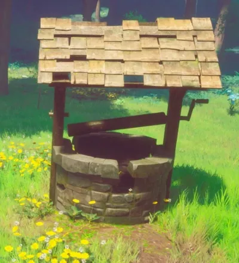

Restless Ghosts is a secondary quest that starts by searching the crumbling well in the ruined village, north-west of the Wise Old Man.
Overview
- 20 Woodcutting to chop thorny vine
- 5 air runes to cast Windstep or resources to build over a large gap
- Any axe or 10 air runes and 5 astral runes to cast Axtral Projection
- Good armour and weapons.
- Food and water
- A few grilled mushrooms for poison resistance whilst navigating Whispering Swamp
- Multiple Goblins
- Multiple giant rats
- A few putrid rats whilst navigating around Whispering Swamp
Location
Walkthrough


In the ruined village north-west of the Wise Old Man, locate and interact with the crumbling well to receive the ghostspeak amulet. (Note: The amulet goes to the quest-item tab of your inventory instead of your basic inventory.) Next, speak with four ghosts throughout the Bramblemead Valley and Whispering Swamp. The ghosts are only visible from sunset to sunrise..
- Warren's spirit is located in a dilapidated house in the south-west corner of the ruined village.
- Lazina's spirit is located in a broken house to the south-east of the windmill in the Temple Woods and is along the walking path.
- Finn's spirit is located inside a cave blocked by thorny vines to the south-east of the Wise Old Man. Cast Windstep to reach the lip of the cave, and then use a logging axe to destroy the thorns blocking the entrance.
- Kay's spirit is located in a ruined house in the Whispering Swamp along the border with the Bramblemead Valley.
After meeting with all four ghosts, travel to the Remembrance Shrine located outside at the north-west corner of the church where players first spawn. The shrine is a large, stone flower vase atop a stone sculpture. Interact with the statue and select each option to "remember" all four ghosts.
Quest completed.
Rewards
- Ability to speak to ghosts (requires partial completion)
- 1x Restless Ghosts reward pack containing:
Required to Start
Starting this quest is required to start the following quest(s):
Trivia
- The quest takes its name from one of the six quests that were available with the launch of RuneScape.
This guide is the wiki's Restless Ghosts article, by its editors, reformatted for this site. Licensed CC BY-NC-SA 3.0.